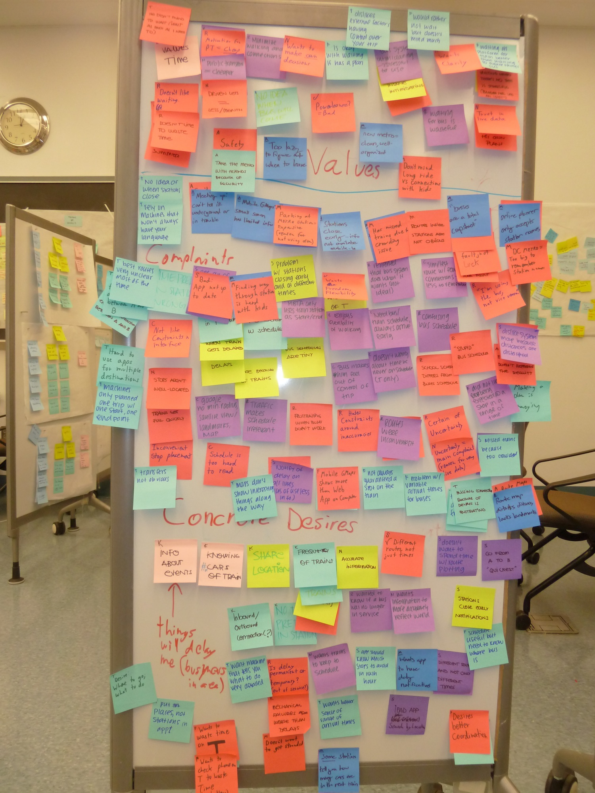
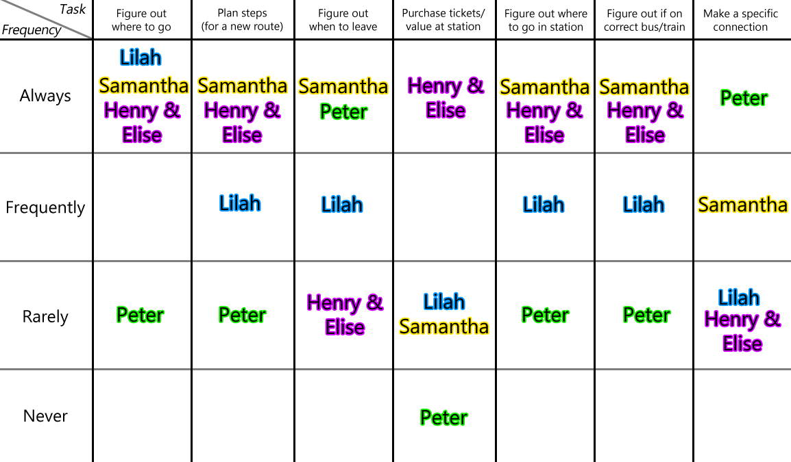

Problem Statement
Getting around Boston using public transportation can be difficult, especially for new or inexperienced users:
- Routes are confusing
- Arriving on time is a challenge
- Bus and train schedules are not connected to reality
There are several "trip planner" applications that try and help, but they have their share of problems:
- They assume the schedule is always accurate
- They "reset" after every use and never learn your habits
- Finding the information you need takes time and effort
Nietzsche MBTA aims to solve those problems and create an application that helps new and inexperienced of public transportation master the MBTA with confidence and ease.
Public transportation shouldn’t be hard.
Process Overview

In order to develop a better understanding of the users we are trying to help, our team began a process of observation and interviewing.
Individually we were able to examine the current offerings of mobile applications. There proved to be a wide variety of styles and approaches to helping people utilize public transportation (see Inspirations) and this helped us start to think about the sorts of information that people need to plan and execute a journey. Since we used public transportation to get into Boston for user interviews, we were also able to observe individuals looking at maps, consulting phones, calling friends, or asking for assistance. These interactions were very brief, but still helped our initial research.
Before conducting interviews, we used our observations to help craft a list of question to ask users. Some of these questions included:
- How frequently and under what circumstances do our users use public transportation?
- How do they plan new routes? What information do they need? What information do they currently lack?
- What are their frustrations or difficulties with using public transportation?
- What are their strategies for dealing with those difficulties?
- What are their feelings about public transportation?
It was more convenient to conduct interviews over the phone with users we knew personally. This helped us refine our questions and start to sort our notes into values, complaints, insights, and personal information. We supplemented these initial conversations by going to the Harvard Square train station on a Saturday, allowing us to find vacationers, families visiting Boston colleges, and other distinctly infrequent T users.
In total we interviewed 15 individuals and amassed over 400 sticky notes worth of information.
Research Synthesis
After collecting all information, we used an affinity-mapping style exercise to further sort our notes into values, needs, desires, habits, personal information, and insights. Patterns began to emerge quite quickly. Some of the more interesting lessons learned include:
- Some users feel powerless and want more control. They feel uncomfortable having to rely on others to get them from place to place on time.
- Some users are resigned to the inconveniences of public transit and don't see a way to solve it. For them, spending time exhaustively planning a route is a waste of time since the plan will not line up with reality.
- A single user can have very different priorities for traveling, depending on circumstance. Factors like weather and mood can dramatically influence the decisions a user makes. Going to work and leaving work can have very different goals that prompt the user to take very different routes.
Certain observations or complaints were common across almost all user interviews:
- When getting from A to B, "A" & "B" are rarely public transportation hubs. There is still some amount of travel required between a train station/bus stop and a user's actual destination.
- A schedule is meaningless if there is a high degree of variability within the system. "Power users" prefer to use live data because it is more "accurate" than the printed schedule.
- Trains are better than buses because they arrive/depart much more frequently than buses.
Personas
Based on the various needs, goals, and desires we discovered in our interviews, we created four distinct personas: Lilah, Henry & Elise, Samantha, and Peter. The personas are all from different demographics and have varying transportation habits, but they all fall into our target group of people who either rarely use the MBTA or often take the MBTA to new places.
Lilah Kennedy
"I never realized how easy public transportation is before! Sooo much better than paying for gas every weekend!"
Lilah is an 18 year old freshman at Northeastern University. She is originally from Dayton, OH, and has no prior experience with public transportation. She uses the bus to go to Boston with her friends on the weekend. In terms of apps, she uses a combination of Google Maps and NextBus: Google Maps to find train/bus stops, and NextBus for timing.
Goals
- Get herself and her friends into Boston and back
- Minimize amount of time spent on public transport
Needs
- To feel safe on the train/bus (peace of mind)
Values
- Having the option to change her plans due to the information her app gives her
Desires
- A better way to meet up with friends
Henry and Elise Carpenter
"We’re in Boston because we want to spend this time seeing the world. We don’t want to get lost and look like fools."
Henry and Elise Carpenter are a retired couple from Huddersfield, England (Henry is 72, Elise is 65). They are familiar with the train and bus systems of many major European cities, but this is their first time in the US. They own a smartphone, but prefer to ask real people for directions. Henry and Elise always prefer the train to the bus - they once got lost on the bus and needed to call a taxi
Goals
- Minimize walking
- Minimize connections
- Not look like fools in the train station
Needs
- To get on the right train going in the right direction
Values
- Not being too proud to ask for help
Desires
- To know which stations are crowded/have many stairs
- To have fun and not be preoccupied about getting lost
- An app that’s easy to learn/doesn’t require much technological knowledge
Samantha Granger
"Yeah, maybe the T’s not ideal with the kids, but hey, you try finding parking at the Aquarium after sitting in traffic for an hour and a half."
Samantha Granger is the 35 year old divorced mother of Alex (2) and David (6). She lives in Somerville, but takes the kids into Boston about once a week to visit with their dad/go to interesting places. This means she usually ends up taking a new route on the T about once a month. She uses the MBTA trip planner to plan her entire trip before she leaves the house, and Google Maps on her phone while she's out if she absolutely has to.
Goals
- Minimize stress (in the form of crowded stations and multiple connections)
Needs
- To keep her kids in sight, safe, and entertained during probable delays
Values
- Planning ahead
- Not getting too upset when the bus/train is late - that's just how it is
Desires
- Well-organized stations
Peter Morren

"The T is a tool. It is your responsibility to learn how to use it and how to compensate for its problems"
Peter is a recent Harvard Law graduate who lives in Back Bay and works at Epstein, Becker, and Greene in the financial district. He is familiar with the MBTA, but new to commuting.
Goals
- Get to work early
- Maximize use of time while waiting
- Be professional at all times
Needs
- To be on time to work/meetings
Values
- Personal punctuality
- Being in control of his public transit experience
Desires
- Independence - not being at the mercy of the bus/train’s schedule
Tasks
Based on our interviews and observations, we identified seven major tasks that MBTA users complete during their journeys. The following table lists these tasks and shows how frequently our personas complete them.

- Figure out where to go – users rarely want to go to a train station or a bus stop, but they need to know which public transit location is closest to their final destination.
- Plan steps for a new route – depending on the confidence or experience of a user, they will plan their route and make note of connections, stops, etc.
- Figure out when to leave – in order to be somewhere by a particular time, users must figure out how long a journey will take and what the possibility of delay is in order to determine the right time to go.
- Purchase tickets or add value – in order to use public transportation, users need a ticket or Charlie Card.
- Figure out where to go in a station – stations can have multiple train lines and multiple levels, providing an additional challenge to users trying to use public transportation.
- Figure out if on correct bus/train – users unfamiliar with the MBTA system have no intuition about whether or not their bus or train is going where they expect to go.
- Make a specific connection – especially when dealing with train-to-bus transfer, making a specific connection at a certain time can be the difference between being on time and being 30 minutes late.
Scenarios
In order to understand how each of our personas would most likely use our app, we created scenarios that each of them face often when they use the MBTA
Lilah: Getting herself and her friends into Boston on a Friday night
- Lilah uses Google Maps to find the busses or trains that go near the restaurant
- Since a bus stop is closest to the restaurant, Lilah uses NextBus on her phone to figure out when the next bus stops at their dormitory
- The bus is full since it’s a Friday night, so Lilah and her friends have to wait until the next one.
- Lilah and her friends are meeting some other friends at the restaurant, so she texts them to let them know they will be late.
- Eventually they can get on the bus that takes them to the restaurant.
Henry and Elise: Going sight-seeing in Boston
- They go to the hotel concierge and ask which T stations are near the attractions
- They ask the concierge to write the station names down so they don’t forget
- At the T station closest to the hotel, purchase a day ticket
- Henry & Elise consult the system map and figure out which trains they need to take, making special note of any connections
- Get on the next train that comes
- Consult the system map inside the train to make sure they know when to get off
- Exit the train and wait for any connections
- Repeat 5-7.
Samantha: Taking her kids to the New England Aquarium to visit their father
- Sam uses Google Maps to find the station closest to the aquarium
- She then uses the MBTA route planner to look at which trains she must take to get there
- She wants to minimize time, walking distance, and number of connections, but the planner makes her pick one. She picks “minimize connections”
- Uses the MBTA planner to figure out when they should leave home, but Sam leaves ~15 minutes early to give herself time to deal with delays.
- Sam waits for the bus - sure enough, it’s running late.
- Sam has to entertain her children while they stand outside waiting for the bus
- Sam has to transfer from a bus to the Orange line. Getting a stroller down the steps is a pain, but easier than waiting for an attendant to let her use the elevator.
- Sam needs to figure out which train to get on while keeping track of her children
- People are very friendly and help her on to the T
- Exit the T.
Peter: Getting to work by 9:00am
- Peter checks his phone to see if there are any services delays on the line he usually takes and to double check the morning T schedule.
- Gets to his local station ~15 minutes early to give himself some margin for error.
- Gets on first train, keeping close to the door so he can make a quick exit
- Exits train before getting stuck in the crowd
- Works his way through morning commuters to get to his connecting train
- Gets on and checks his watch to make sure he is on time
- Arrives to work early, the model of professionalism
{kind=link}
{kind=link}
{kind=link}